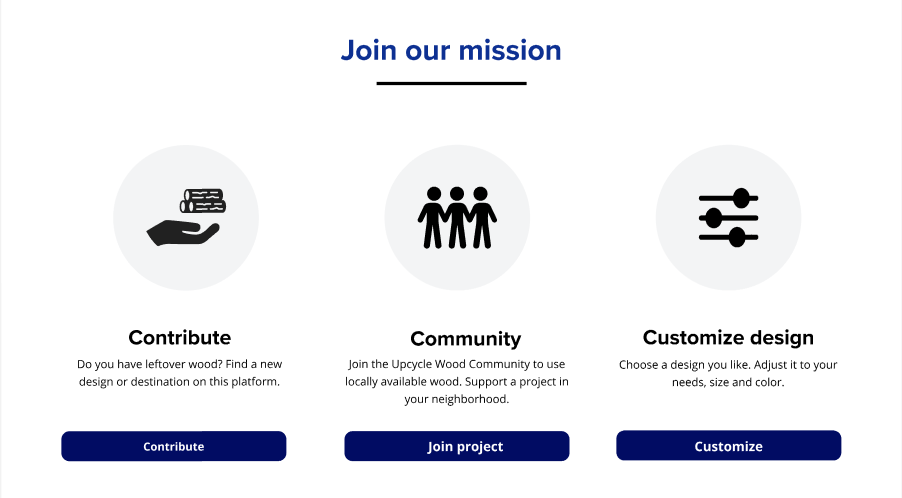

Upcycle Wood Platform
I did my internship at Digital Production Research Group (DPRG). The company is focusing on how an online platform can help upcycle wood. Normally, waste wood is shredded and burned, because you can't make anything out of all these loose pieces. But at the Robot Lab, Digital Production Research Group (DPRG) developed a method in which the computer can make a 3-D model based on the pieces of wood scanned by a robot. The work I performed as an intern at Digital Production Research Group (DPRG) is the further development of the Upcycle Wood Platform to the final version together with my colleague.
Design challenge: “How can an online platform help facilitate the use of waste wood for upcycling purposes in a user-friendly way?”
Process
Before I started my internship here, there were already several interns who had done all the research and made a start on the prototype. So I went through the existing research about the project and the end-users and then continued building the prototype.
I learned from the persona that:
- The user wants to be able to supply wood
- The user wants to be inspired
- The user wants to be informed about who the Robot Lab is and what they do.
- The platform makes it possible for the user to link wood to a project or design.
Information Architecture
In order for me to understand the old prototype and its content, I examined the old sitemap and based on that we decided which old wireframes to keep in the new design and how to improve them. I also found out this way that a few steps were missing in the flow, so this made it faster for me to design the platform

Furthermore, I mainly focused on improving customer loyalty through UI/UX design. Medium (2021) argues that visual design matters a lot, because it leaves a first impression on the customer.
Product goal
The main goal of the platform is that users can donate wood, purchase furniture with their donated wood and support a neighbourhood project by donating wood for the project.
For the final delivery, I had to present the product with a prototype and with a design document explaining my design choices.